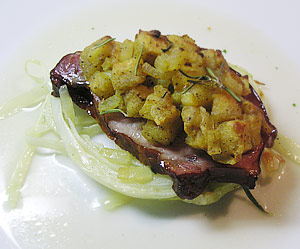

Schweinerippli auf gebratenem Kabis
4 von 6Für die Kruste das Toastbrot entrinden und in Würfelchen schneiden. Eine Zwiebel hacken, andünsten. Toast dazugeben und kurz mitdünsten. Honig und Senf darunter mischen und mit Salz und Pfeffer würzen, beiseite stellen. Backofen auf 200 °C vorheizen. 500g Weisskohl samt Strunk längs in ca. 0,5 cm breite Scheiben schneiden. Scheiben nacheinander in einer Bratpfanne in wenig Öl beidseitig goldbraun anbraten. Auf ein Backblech legen, mit wenig Rohrzucker und Salz bestreuen. 2 dl Bouillon darüber giessen. Pro Person 2 gekochte Ripplischeiben darauf legen. Senfkruste darauf verteilen und etwas Rosmarin darüber zupfen. 1015 Minuten in der Ofenmitte backen. Herausnehmen und samt Flüssigkeit auf Teller verteilen.
